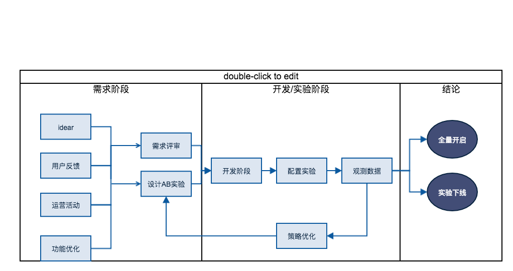
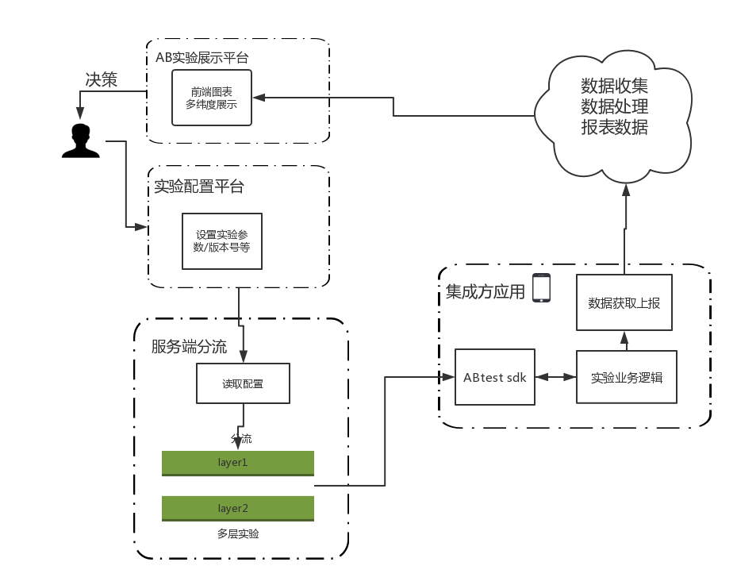

背景
目前输入法内部功能迭代，主要是通过灰度和小渠道的策略，对比新版本和旧版本的数据指标。存在着以下问题
- 数据可能收到渠道、周期波动等因素的干扰
- 缺少聚合对比数据 指标的平台，不方便做决策
- 同时上线多个feature 对指标可能互相影响
- 新功能存在风险
ABtest
使用abtest平台能解决上述问题，并且具有以下优势
- 数据共享：不限于端上的需求实验，服务端/前端页/商业化 等都能通过abtest 平台做决策
- 实验隔离：使用多层分流结构，可以同时上线多个AB实验，每个实验之间隔离，数据指标互不影响
- 风险可控：ab 实验采用动态下发机制，随时控制功能上下线
- 指标聚合：核心指标、分类指标数据聚合，易于得出结论，方便做决策
- 扩展空间：后续可扩展为消费者BG 的共享平台
A/B测试的三大特性：先验、并行、科学
- 先验性： A/B测试结果属于预测型结论，与“后验”的归纳性结论差别巨大。后验的方式是先将版本发布，再通过数据验证效果，而A/B 测试用很少的样本量来推断新版本在全流量下的效果。
- 并行性： A/B测试将两个或以上的方案同时在线试验，保证每个版本所处环境的一致性，同时节省了验证的时间，无需在验证完一个版本之后再测试另一个。
- 科学性： A/B 测试的正确做法是将相似特征的用户均匀的分配到试验组中，确保每个组别的用户特征的相似性，从而避免辛普森悖论。
A/B测试试验是产生用户阻力的地方，也是增长前进的核心动力。
实验流程

方案
采用服务端多层分流方案，整体架构包括以下几个部分

- AB 实验配置平台：产品经理/研发平时配置新实验
- 分流服务：读取 AB 实验配置平台的配置数据，执行具体的分流算法
- 集成方应用：客户端通过请求分流服务来获取具体加载哪些实验，上报实验分组和埋点
- 数据分析：分析打点数据，通过一定的数据分析算法，得出能够判断版本优劣的报表数据
- AB实验展示平台：图标方式展示处理过的数据，方便人员做决策